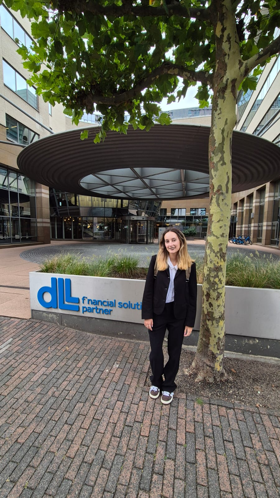
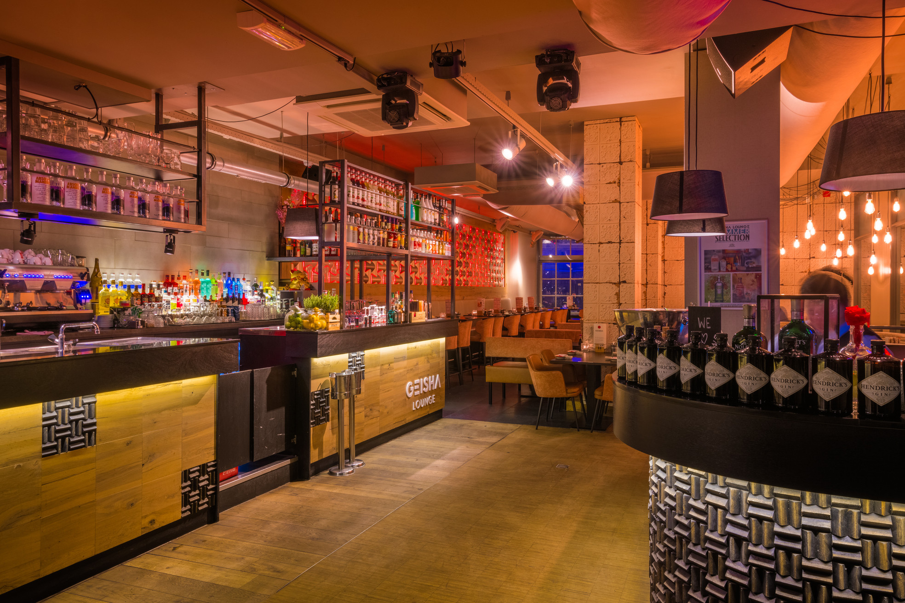
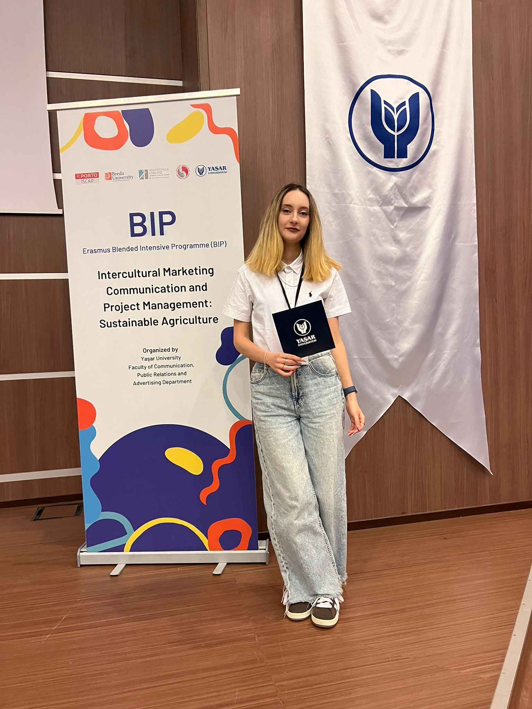
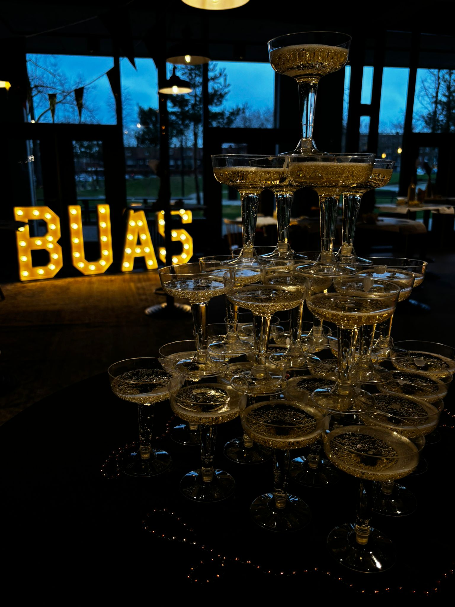

Welcome to my Portfolio!
I’m Theodora Ionescu, a passionate creative business student focused on growing in multicultural settings. I’m confident handling challenging interactions, meeting deadlines, developing marketing strategies while managing and monitoring content.
Get to know me!
My Strongest Points
Interpersonal communication
Through my university projects, internship, and role as a social media manager, I’ve developed strong interpersonal and communication skills, allowing me to confidently engage with people from diverse backgrounds.
Planning and Organising
Managing multiple tasks simultaneously has helped me develop strong planning and organisational skills. I’ve learned to set clear priorities, manage my time effectively, and track progress to ensure every task is completed efficiently.
Social Media Management
Working at Geisha Lounge as a Social Media Manager gave me valuable insight into managing Instagram, TikTok, and YouTube from planning and posting content to analysing performance metrics. I focused on developing effective strategies to boost engagement and help the brand achieve its goals.
Adaptability
During my internship, I discovered my ability to adapt quickly to new environments and connect easily with people. I make the most of every opportunity to learn and grow, and I constantly challenge myself to improve both personally and professionally.
Tools I Use
Showcase
Previous Projects
Here are some of the projects I've worked on, from corporate internships and social media campaigns to academic and creative productions.

Marketing Intern at DLL
Marketing Intern at DLL, supporting the Marketing & Communications Manager in promoting insurance offerings through content creation, communication initiatives, and international collaboration.
See Details
Geisha Lounge Breda – Social Media Manager
Managing Tiktok and Instagram accounts, creating and scheduling content, driving engagement growth for Geisha Lounge Breda. Developing marketing strategies to promote new products and services.
See Details
BIP: Intercultural Marketing Project
Collaborated with Yeșar University and Yanmar to develop an international marketing campaign aimed at increasing Yanmar’s sales and brand recognition.
See Details
Tattoo Design Snowy – Marketing Plan
Created a targeted marketing plan for a new tattoo shop, focusing on brand identity, content strategy, and social media engagement.
See Details
Home Advantage – Documentary Marketing
A documentary concept highlighting the resilience of disabled athletes. Developed a strategic marketing plan for audience engagement.
See Details
Event Production – BUas AGM Staff Events
Organized Thanksgiving and New Year’s staff events, overseeing marketing, volunteer coordination, and logistics.
See Details
Vintigue – Fashion & Sustainability Magazine
A creative magazine exploring vintage fashion and sustainability, featuring original articles, interviews, and photography.
See Details
Echoes of Redemption – Short Film
A character-driven short film focusing on complex family dynamics. Managed production logistics, casting, and coordination.
See DetailsMy Experience
My experience is built on a foundation of creative business studies, hands-on marketing internships, and practical social media management. I excel in multicultural environments and am always looking for new challenges to grow.
Download My ResumeCreative Business Student
Developing a strong foundation in marketing, content creation, and strategy in international settings.
Marketing & Communications
Hands-on experience at DLL, creating content, supporting internal communications, and collaborating with global teams.
Social Media Management
Managed Instagram, TikTok, and YouTube for Geisha Lounge, focusing on content strategy, production, and performance analysis.